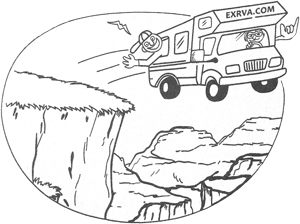

Over a decade of experience designing, developing, and optimizing WordPress websites and custom web applications for clients across the globe — from Sri Lanka to the world.
Custom themes, plugins, WooCommerce stores, Elementor & DIVI builds, and tailored solutions for any WordPress challenge.
End-to-end web applications from database design to polished, responsive front-end interfaces using modern tools.
Core Web Vitals optimization, speed audits, caching strategies, and search-engine tuning that delivers measurable results.
Maintenance, security hardening, plugin updates, backups, and reliable long-term partnership for your digital presence.

I'm Anushka Rajasingha, a WordPress & Fullstack Developer based in Sri Lanka. My career began in system engineering — managing networks, servers, and cloud databases — before I transitioned into development.
With deep roots in ASP.NET, C#, PL/SQL, and T-SQL, I bring serious backend expertise. Over the years I've specialized in WordPress, building custom themes, plugins, and complex solutions with Elementor, DIVI, and WooCommerce.
I've maintained a proven track record on Upwork and Freelancer.com for over a decade, consistently delivering beyond expectations.
Download Resume →Whether you need a brand-new website, a complex plugin, or help with optimization — I'd love to hear about your project.